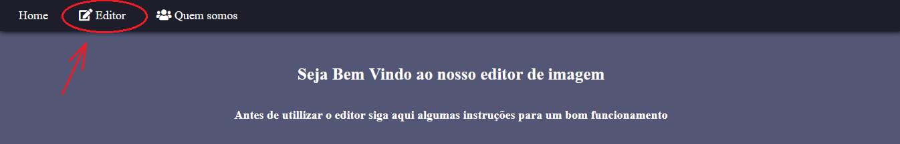
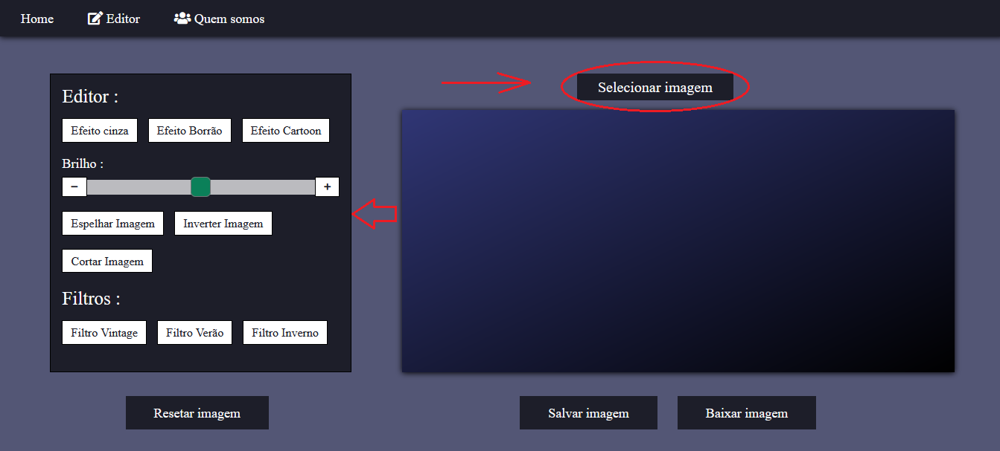
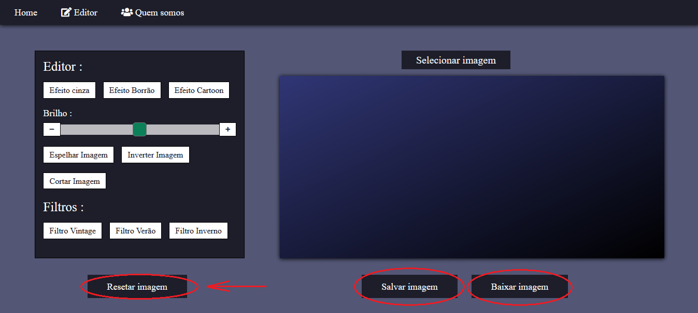

Passo 1/3

Ao se localizar na página Home , no menu superior clique em "Editor"
Passo 2/3

Selecione a imagem que deseja editar
Realize as edições necessárias e disponíveis em sua imagem
Passo 3/3

Caso seja feita uma edição indesejável , clique na opção resetar imagem
Após concluir suas edições baixe ou armazene a sua imagem nos botões de "Salvar Imagem" ou "Baixar Imagem"
❮
❯